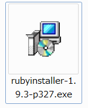
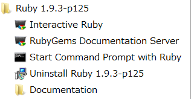

コマンドライン操作での導入方法
Rubyのインストール（Windowsのみ）
MacはRubyが既に入っているのでこの手順は必要ありません。Sassのインストールへどうぞ。
WindowsへのインストールはRubyInstallerを使うのが手っ取り早いです。
ダウンロードページに進むとインストーラーのリンクがバージョンごとにリストアップされています。
一番上をクリックすると最新バージョンのダウンロードが始まります。
exeファイルがダウンロードされるまで少し待ちます……

ダウンロードが終わったらexeをダブルクリックして起動してください。
Rubyのセットアップが始まります。
お馴染みのライセンス確認はI acceptにチェックを入れてNext。
ダウンロード先の選択になります。
RubyのディレクトリまでにUnicode文字が含まれてるとエラーが出たりするので、ドライブ直下にしておくのが無難です。
オプションの 「Add Ruby executables to your PATH」 はチェックしておくと後で自分でPATHの設定をしなくて済みます。 「Associate .rb and .rbw files width this Ruby installation」 はファイルの関連付けなのでお好みで。
Installボタンを押すとインストールが始まります。


インストールが終わったらコマンドプロンプトを立ち上げて確認します。
スタートメニューの検索で「cmd」と入力してEnterを押せば黒い画面が起動します。
スタートメニューでRubyを探してStart Command Prompt with Rubyを実行してもいいです。 
ruby -vと入力してEnterを押したとき、バージョンが表示されれば使える状態になっています。

Sassのインストール
Rubyのバージョン確認が出来ていれば、続けてSassのインストールができます。
Macの場合はここから始めてください。
コマンドプロンプト（win）またはターミナル（Mac）で
次のコマンドを入力してEnterを押すと、Sassのインストールが始まります。
gem install sassコマンドが入力できるようになったらインストール完了です。
導入の説明はこれでおしまいです。